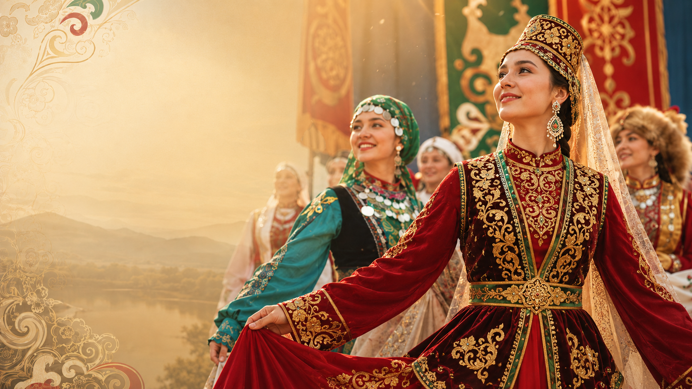
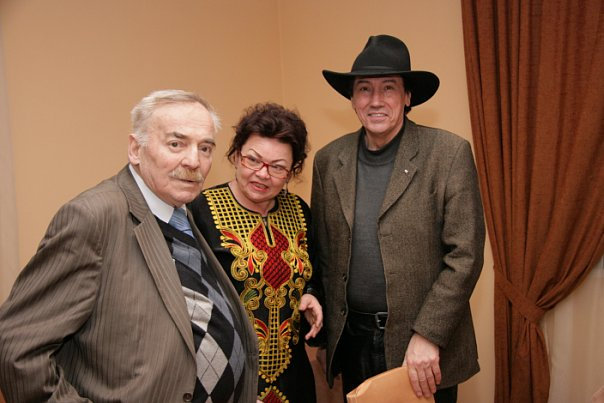

АЛТЫН МАЙДАН
Интернациональный культурно-просветительский проект им. Бисера Кирова — международные инклюзивные фестивали-конкурсы, где традиционная культура разных народов звучит на одной сцене.
Большая многонациональная семья, где традиции — основа всего
«Алтын Майдан» создан в 2009 году как новая площадка для активного межэтнического диалога. Основатели проекта — выдающийся кавказский этнохореограф Мухтар Кудаев, журналист Гамира Гадельшина и легенда мировой эстрады Бисер Киров, чьё имя проект носит по сей день.
За 16 лет фестивали-конкурсы прошли от Татарстана и Приэльбрусья до Крыма, Осетии, Якутии и Китая — каждый раз собирая коллективы, для которых народная культура не увлечение, а образ жизни.
«Инклюзивный — не значит фестиваль только для людей с ОВЗ. Это значит в одном пространстве и нормотипичные участники, и участники с ограниченными возможностями здоровья».

{{ p.title }}
{{ p.text }}
География и история фестивалей
{{ t.title }}
{{ t.text }}
Ближайшие фестивали
Участие в конкурсной программе бесплатно для коллективов. Дорожные расходы и питание — за счёт направляющей стороны.
Галерея фестивалей
Новости и события
{{ n.title }}
{{ n.text }}
Готовы привезти коллектив на
«Алтын Майдан»?
Заполните форму — расскажем о ближайших фестивалях, положении и заявке. Отвечаем лично каждому коллективу.